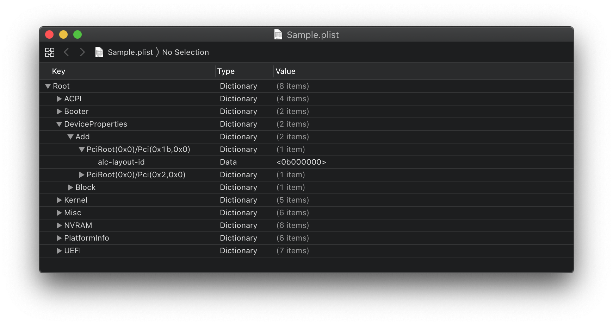

Last modified: Wed Jun 03 2020 14:35:17 GMT+0000 (Coordinated Universal Time)
Fixing audio with AppleALC
- Supported version: 0.5.9
Table of Contents:
- Finding your layout ID
- Testing your layout
- Making Layout ID more permanent
- Miscellaneous issues
- Troubleshooting
So to start, we'll assume you already have Lilu and AppleALC installed, if you're unsure if it's been loaded correctly you can run the following in terminal(This will also check if AppleHDA is loaded, as without this AppleALC has nothing to patch):
kextstat | grep -E "AppleHDA|AppleALC|Lilu"
If all 3 show up, you're good to go. And make sure VoodooHDA is not present. This will conflict with AppleALC otherwise.
If you're having issues, see the Troubleshooting section
Finding your layout ID
So for this example, we'll assume your codec is ALC1220. To verify yours, you have a couple options:
- Checking motherboard's spec page and manual
- Check Device Manager in Windows
- Run
catin terminal on Linuxcat /proc/asound/card0/codec#0 | less
Now with a codec, we'll want to cross reference it with AppleALC's supported codec list:
With the ALC1220, we get the following:
0x100003, layout 1, 2, 3, 5, 7, 11, 13, 15, 16, 21, 27, 28, 29, 34
So from this it tells us 2 things:
- Which hardware revision is supported(
0x100003), only relevant when multiple revisions are listed with different layouts - Various layout IDs supported by our codec(
layout 1, 2, 3, 5, 7, 11, 13, 15, 16, 21, 27, 28, 29, 34)
Now with a list of supported layout IDs, we're ready to try some out
Note: If your Audio Codec is ALC 3XXX this is likely false and just a rebranded controller, do your research and see what the actual controller is.
- An example of this is the ALC3601, but when we load up Linux the real name is shown: ALC 671
Testing your layout
To test out our layout IDs, we're going to be using the boot-arg alcid=xxx where xxx is your layout. Remember that to try layout IDs one at a time. Do not add multiple IDs or alcid boot-args, if one doesn't work then try the next ID and etc
config.plist
├── NVRAM
├── Add
├── 7C436110-AB2A-4BBB-A880-FE41995C9F82
├── boot-args | String | alcid=11
Making Layout ID more permanent
Once you've found a Layout ID that works with your hack, we can create a more permanent solution for closer to how real macs set their Layout ID.
With AppleALC, there's a priority hierarchy with which properties are prioritized:
alcid=xxxboot-arg, useful for debugging and overrides all other valuesalc-layout-idin DeviceProperties, should only be used on Apple hardwarelayout-idin DeviceProperties, should be used on both Apple and non-Apple hardware
To start, we'll need to find out where our Audio controller is located on the PCI map. For this, we'll be using a handy tool called gfxutil then with the macOS terminal:
path/to/gfxutil -f HDEF

Then add this PciRoot with the child layout-id to your config.plist under DeviceProperties -> Add:

Note that AppleALC can accept both Decimal/Number and Hexadecimal/Data, generally the best method is Hex as you avoid any unnecessary conversions. You can use a simple decimal to hexadecimal calculator to find yours. printf '%x\n' DECI_VAL:

So in this example, alcid=11 would become either:
layout-id | Data | <0B000000>layout-id | Number | <11>
Note that the final HEX/Data value should be 4 bytes in total(ie. 0B 00 00 00 ), for layout IDs surpassing 255(FF 00 00 00) will need to remember that the bytes are swapped. So 256 will become FF 01 00 00
- HEX Swapping and data size can be completely ignored using the Decimal/Number method
Reminder: You MUST remove the boot-arg afterwards, as it will always have the top priority and so AppleALC will ignore all other entries like in DeviceProperties
Miscellaneous issues
No Mic on AMD:
- This is a common issue with when running AppleALC with AMD, specifically no patches have been made to support Mic input. At the moment the "best" solution is to either buy a USB DAC/Mic or go the VoodooHDA.kext method. Problem with VoodooHDA is that it's been known to be unstable and have worse audio quality than AppleALC
Same layout ID from Clover doesn't work on OpenCore:
This is likely do to IRQ conflicts, on Clover there's a whole sweep of ACPI hot-patches that are applied automagically. Fixing this is a little bit painful but SSDTTime's FixHPET option can handle most cases.
For odd cases where RTC and HPET take IRQs from other devices like USB and audio, you can reference the HP Compaq DC7900 ACPI patch example in the trashOS repo
Kernel Panic on power state changes in 10.15:
- Enable PowerTimeoutKernelPanic in your config.plist:
Kernel -> Quirks -> PowerTimeoutKernelPanic -> True
Alternatively you can use setpowerstate_panic=0 in boot-args, which is the equivalent of the above quirk.
Troubleshooting
So for troubleshooting, we'll need to go over a couple things:
- Checking if you have the right kexts
- Checking if AppleALC is patching correctly
- Checking AppleHDA is vanilla
- AppleALC working inconsistently
Checking if you have the right kexts
To start, we'll assume you already have Lilu and AppleALC installed, if you're unsure if it's been loaded correctly you can run the following in terminal(This will also check if AppleHDA is loaded, as without this AppleALC has nothing to patch):
kextstat | grep -E "AppleHDA|AppleALC|Lilu"
If all 3 show up, you're good to go. And make sure VoodooHDA is not present. This will conflict with AppleALC otherwise. Other kexts to make sure you do not have in your system:
- realtekALC.kext
- CloverALC.kext
- VoodooHDA.kext
- HDA Blocker.kext
- HDAEnabler#.kext(# can be 1, 2, or 3)
Hey Lilu and/or AppleALC aren't showing up
Generally the best place to start is by looking through your OpenCore logs and seeing if Lilu and AppleALC injected correctly:
14:354 00:020 OC: Prelink injection Lilu.kext () - Success
14:367 00:012 OC: Prelink injection AppleALC.kext () - Success
If it says failed to inject:
15:448 00:007 OC: Prelink injection AppleALC.kext () - Invalid Parameter
Main places you can check as to why:
- Injection order: Make sure that Lilu is above AppleALC in kext order
- All kexts are latest release: Especially important for Lilu plugins, as mismatched kexts can cause issues
Note: To setup file logging, see OpenCore Debugging.
Checking if AppleALC is patching correctly
So with AppleALC, one of the most easiest things to check if the patching was done right was to see if your audio controller was renamed correctly. Grab IORegistryExplorer and see if you have an HDEF device:

As you can see from the above image, we have the following:
- HDEF Device meaning our rename did the job
- AppleHDAController attached meaning Apple's audio kext attached successfully
alc-layout-idis a property showing our boot-arg/DeviceProperty injection was successful- Note:
layout-id | Data | 07000000is the default layout, andalc-layout-idwill override it and be the layout AppleHDA will use
- Note:
Note: Do not rename your audio controller manually, this can cause issues as AppleALC is trying to patch already. Let AppleALC do it's work.
More examples:
| Correct layout-id | Incorrect layout-id |
|---|---|
 |
 |
As you can see from the above 2, the right image is missing a lot of AppleHDAInput devices, meaning that AppleALC can't match up your physical ports to something it can understand and output to. This means you've got some work to find the right layout ID for your system.
Checking AppleHDA is vanilla
This section is mainly relevant for those who were replacing the stock AppleHDA with a custom one, this is going to verify whether or not yours is genuine:
sudo kextcache -i / && sudo kextcache -u /
This will check if the signature is valid for AppleHDA, if it's not then you're going to need to either get an original copy of AppleHDA for your system and replace it or update macOS(kexts will be cleaned out on updates). This will only happen when you're manually patched AppleHDA so if this is a fresh install it's highly unlikely you will have signature issues.
AppleALC working inconsistently
Sometimes race conditions can occur where your hardware isn't initialized in time for AppleHDAController resulting in no sound output. To get around this, you can either:
Specify in boot-args the delay:
alcdelay=1000
Or Specify via DeviceProperties(in your HDEF device):
alc-delay | Number | 1000
The above boot-arg/property will delay AppleHDAController by 1000 ms(1 second), note the ALC delay cannot exceed 3000 ms